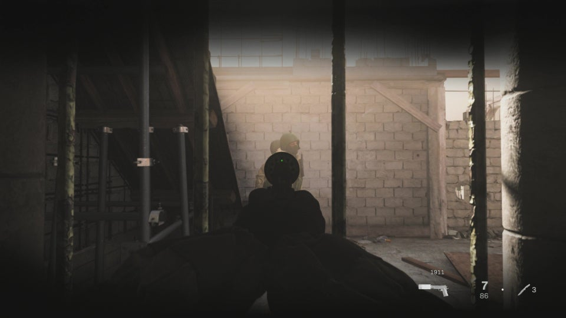

This page contains IGN's walkthrough for Fog of War in Call of Duty: Modern Warfare.
In this mission, you'll be working with Farah, disguised as a civilian, as you make your way through the terrorist-filled streets. This is a callback to the All Ghillied Up mission from Call of Duty 4.
After you talk with Farah and grab your disguise and weapons, follow her out the door. Don't attack anyone and stick close to her. Eventually, you'll come to a section that requires you to separate for a short while. Here, you'll need to head to the left to pick up a cinderblock from the pile.
Holding it will allow you to pass through the path where the two guards and the dog are standing.
Make your way out the other side and you'll see Farah run by. She tells you to go left, so follow her instructions. Here, she'll bust through the nearby door and take out the guard ahead.
Enter the building to the left and eliminate the guard assaulting the woman. After that, continue following Farah through the door that leads outside. You'll come to a spot with multiple enemies here. What you need to do is enter the building on your right (the one with the colored crates stacked up by the garage door) and search the front of the vehicle inside to get a makeshift silencer.
Once you grab it, head along the right side of the truck by the enemies and follow Farah's orders to take them out quietly.
Enter the building and use the hole in the wall to eliminate the guards in the next room. Grab the throwing knife on the table and continue onward.
Make your way alongside the group of people outside and continue following Farah into a building and up a ladder. When you reach the top, you'll have a new objective: Plant explosives on the two helicopters.
Head to the rightmost one first. To do so, drop down to the street and you'll find a room below the helicopter, next to another room with a guard in front of a door. You'll notice a tiny space where you can see into the next hall, so use that to take out the enemy.
After that, follow the path and grab another cinderblock nearby so you can pass by the guards. Drop it and climb up the ladder behind them.
When you reach the top, go left towards the helicopter and you'll come to a room with a set of stairs. Take them up to the roof and eliminate the pilot by the helicopter.
Go ahead and plant the first explosive and get ready to do it once more with the other helicopter. After that, head to the other helicopter, back down the stairs, by the ladder you climbed up.
You'll come across a set of stairs guarded by two enemies. Take the path to the right of them and you'll end up downstairs. Continue just ahead towards another set of stairs that lead to the opposite side of the enemies from above.
Here, you'll be able to line up a shot and take them both out easily.
Take them out and head up the stairs to the helicopter. You can sneak up and plant the explosives without being seen by the guards nearby. Just watch out for the one patrolling.
Plant the explosives, and then run back down to the ground level, towards Farah. Climb the ladder that leads up to where she is and after you walk inside, she'll instruct you to detonate the explosives.
Follow her instructions and watch the sparks fly. Once you do that, all chaos will ensue, so you'll be able to use this as a distraction to escape. Wait for the guards below to pass and follow Farah down to the street.
Keep following her and you'll eventually be spotted and be forced to run inside a nearby building. Make your way through the building and then head outside, where you'll need to go prone in the grass to avoid being seen.
After the guards turn around, take them out and head into the building on the right. Follow Farah through the gap in the wall and keep moving along the path.
Wait for the guards to pass and you'll then have to enter a building to climb down a ladder. This will end the mission.
<- Piccadilly Walkthrough Proxy War ->